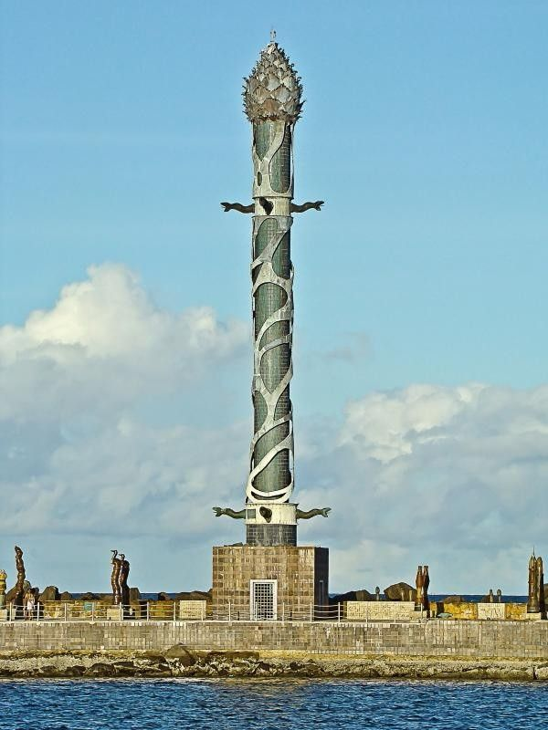

O bairro do Recife é repleto de arte e cultura, basta caminhar por alguns minutos para observar casarões antigos, pinturas e esculturas ao longo da cidade. Uma das obras que mais chama a atenção de quem passa é a Torre de Cristal, localizada nos arrecifes do porto da capital, bem em frente ao Marco Zero.
O Parque das Esculturas Francisco Brennand é um museu de arte a céu aberto localizado na cidade do Recife, capital do estado brasileiro de Pernambuco. Constitui um dos principais feitos do artista plástico pernambucano Francisco Brennand. Idealizado na década de 1990 como parte do projeto “Eu vi o mundo… Ele Começava no Recife” para comemoração dos 500 anos do descobrimento do Brasil, o parque foi inaugurado em 29 de dezembro 2000. Ao total, existem 90 esculturas criadas por Francisco Brennand, sendo a principal obra no complexo a Torre de Cristal, com 32 metros de altura e confeccionada em argila e bronze. Apesar de ser um dos principais pontos turísticos de Recife, em pesquisa ao Jornal do Comércio feito em 2018, compreendeu que mais da metade da população não conhece o parque. No ano de 2014, todas as obras foram restauradas, assim como o parque, além do recebimento de reforço na segurança do complexo.
